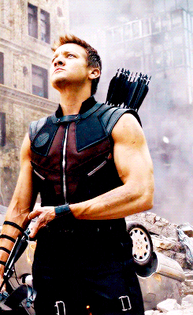

Clint Barton, or Hawkeye, is a master archer with incredible accuracy and skill. Despite lacking superpowers, his ability to hit targets with near-perfect precision—often in high-pressure situations—makes him an exceptional member of the Avengers. His training as a skilled hand-to-hand combatant and his experience as a former S.H.I.E.L.D. agent allow him to take on multiple roles in the field. Clint’s background in criminality and redemption provides a layered, human element to his character, as he constantly struggles to balance his family life with his heroic duties.
